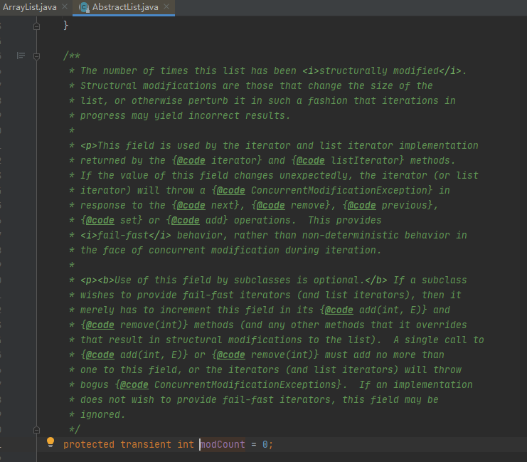

比较器
Comparable
java.lang.Comparable源码：
1
2
3public interface Comparable<T> {
public int compareTo(T o);
}Comparable的实现类，其实例化对象和同类型对象比较。
其compareTo方法只有一个参数，一个和自己比较的对象，返回值为分为负整数、0、正整数三种情形，该值用于底层排序算法的条件判断。
对于容器来说，在容器内部实现compareTo方法。
Comparator
java.util.Comparator源码主要部分：
1
2
3
4public interface Comparator<T>{
int compare(T o1, T o2);
boolean equals(Object obj);
}Comparator的实现类，其实例化对象作为裁判。
其compare方法是两个参数，裁判来比较传入的对象，返回值为分为负整数、0、正整数三种情形，该值用于底层排序算法的条件判断。
对于容器来说，在容器外部实现compare方法。
二者的选择
- 排序规则固定，Comparable接口。排序规则经常变化，Comparator接口。
迭代器
概述
由于各种容器的底层实现结构（数组，链表，哈希表等）不同，把容器元素的访问逻辑从不同类型容器中抽取出来，从而避免暴露容器的内部结构，使用户对容器元素的操作更简单，即迭代器模式。
Iterable
java.lang.Iteable源码：
1
2
3
4
5
6
7
8
9
10
11
12
13
14
15public interface Iterable<T> {
Iterator<T> iterator();
default void forEach(Consumer<? super T> action){
Objects.requireNonNull(action);
for (T t : this) {
action.accept(t);
}
}
default Spliterator<T> spliterator() {
return Spliterators.spliteratorUnknownSize(iterator(), 0);
}
}Collection接口继承自Iterable接口，Iterable的作用是：
- 使得其所有实现成为foreach语句的目标
- 其iterator()方法返回一个标准的Iterator实现
Iterator
java.util.Iterator源码：
1
2
3
4
5
6
7
8
9
10
11
12
13
14
15
16public interface Iterator<E> {
boolean hasNext();//判断是否存在下一个元素
E next();//获取下一个元素
default void remove() {
throw new UnsupportedOperationException("remove");
}//移除元素
default void forEachRemaining(Consumer<? super E> action) {
Objects.requireNonNull(action);
while (hasNext())
action.accept(next());
}
}Iterator遍历时禁止对容器进行增删的问题
使用Iterator或者foreach（foreach底层实现为Iterator）时，禁止对所遍历的容器进行改变其大小结构的操作，也即不能使用容器的add/remove方法，否则会报ConcurrentModificationException。
ArrayList中Iterator实现源码：
1
2
3
4
5
6
7
8
9
10
11
12
13
14
15
16
17
18
19
20
21
22
23
24
25
26
27
28
29
30
31
32
33
34
35
36
37
38
39
40
41
42
43
44
45
46
47
48
49
50//ArrayList的内部类
private class Itr implements Iterator<E> {
int cursor; // index of next element to return
int lastRet = -1; // index of last element returned; -1 if no such
int expectedModCount = modCount;
Itr() {}
public boolean hasNext() {
return cursor != size;
}
("unchecked")
public E next() {
checkForComodification();
int i = cursor;
if (i >= size)
throw new NoSuchElementException();
Object[] elementData = ArrayList.this.elementData;
if (i >= elementData.length)
throw new ConcurrentModificationException();
cursor = i + 1;
return (E) elementData[lastRet = i];
}
public void remove() {
if (lastRet < 0)
throw new IllegalStateException();
checkForComodification();
try {
ArrayList.this.remove(lastRet);
cursor = lastRet;
lastRet = -1;
expectedModCount = modCount;
} catch (IndexOutOfBoundsException ex) {
throw new ConcurrentModificationException();
}
}
("unchecked")
public void forEachRemaining(Consumer<? super E> consumer) {//省略
}
final void checkForComodification() {
if (modCount != expectedModCount)
throw new ConcurrentModificationException();
}
}1
2
3public Iterator<E> iterator() {
return new Itr();
} 由源码可知，检查并抛出异常的是checkForComodification方法，其判断条件为modCount != expectedModCount。expectedModCount是迭代器类Itr的成员变量，在迭代器对象创建时赋初值为modCount。那么modCount是什么呢？
找遍ArrayList类也没有发现modCount，那么向上找，发现其是ArrayList的父抽象类AbstractList的成员变量，其注释如下图

由注释可知，modCount的含义是list被结构性修改的次数。
由此可知，当ArrayList调用其add/remove方法时，modCount会自加，而此时迭代器中的expectedModCount未同步，因此才会导致再次调用next方法时抛出异常。如若使用ArrayList迭代器自带的remove方法，迭代器会同步更新expectedModCount的值，因此再次调用next不会报异常。
使用该机制的主要目的是为了实现ArrayList中的快速失败机制（fail-fast），在Java集合中较大一部分集合是存在快速失败机制的。
快速失败机制产生的条件：当多个线程对Collection进行操作时，若其中某一个线程通过Iterator遍历集合时，该集合的内容被其他线程所改变，则会抛出ConcurrentModificationException异常。
所以要保证在使用Iterator遍历集合的时候不出错误，就应该保证在遍历集合的过程中不会对集合产生结构上的修改。
总结：在使用迭代器时，ArrayList不能调用自身的add/remove方法。
但可以使用ArrayList的迭代器的remove方法，该方法移除迭代器返回的最后一个元素，且每调用一次next方法才能调用一次该remove方法（一对一）。
还可以使用ListIterator，它是一个更加强大的Iterator的子类型，可以使用add/remove方法。